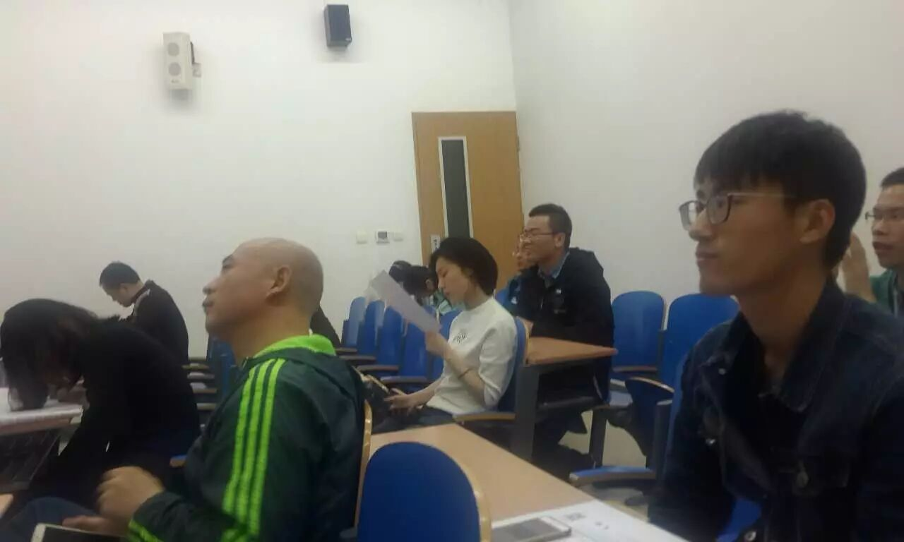
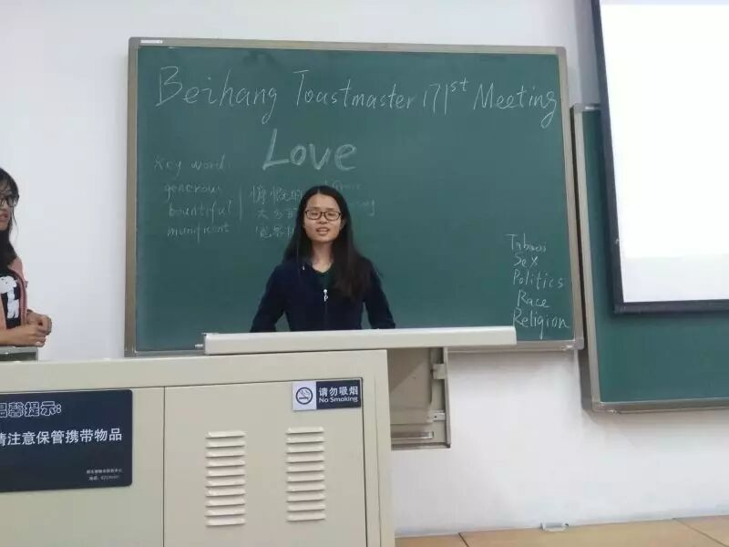
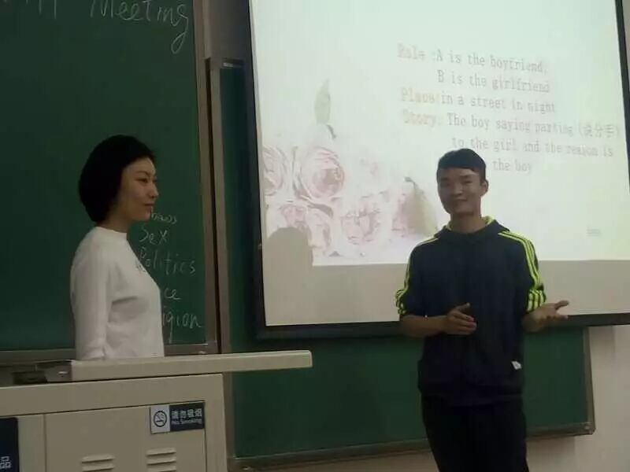
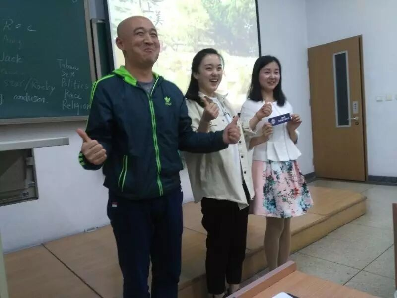
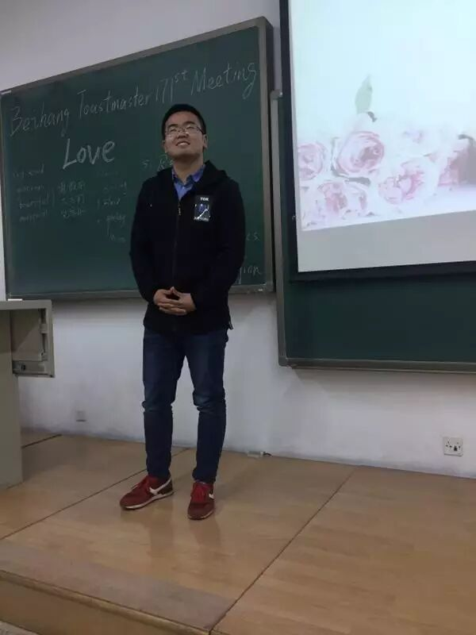
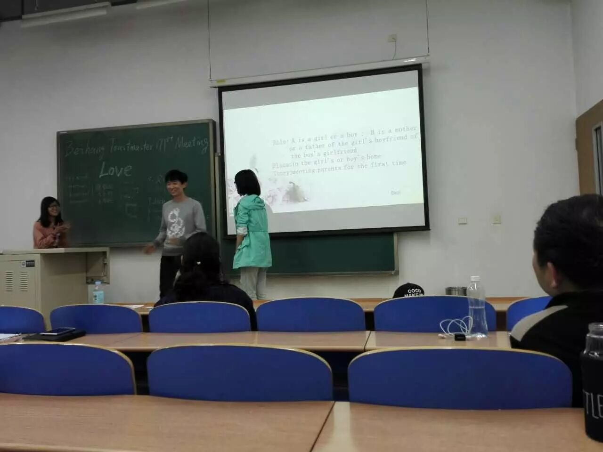
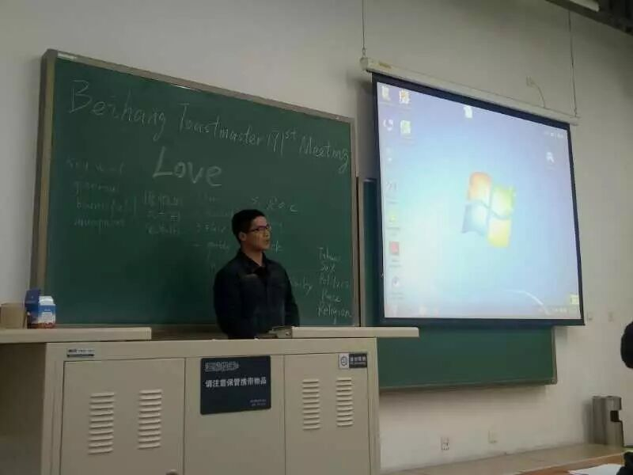
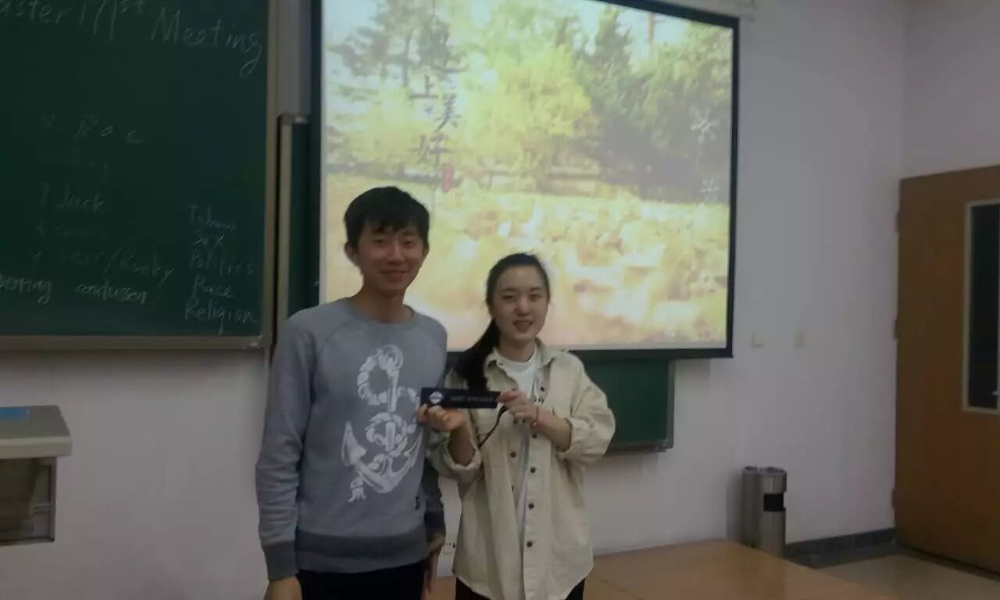
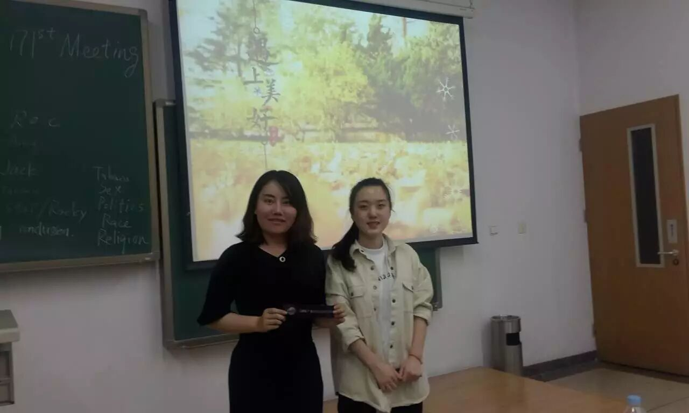
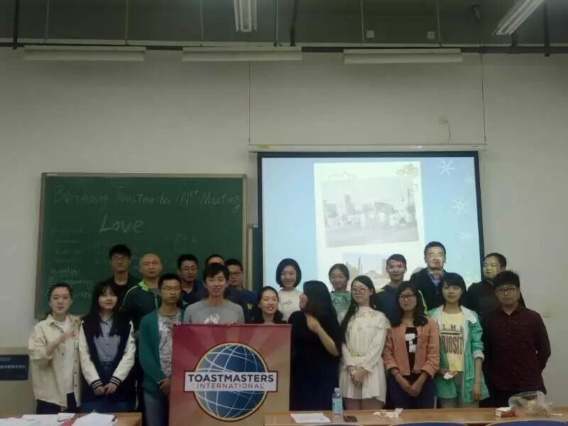

请输入标题 bcdef
Thoughts of you dance through my mind. Knowing, it is just a matter of
time.Wondering... will you ever be mine?You are in my dreams, night... and
sometimes... day.The thoughts seem to never fade away.
----Corwin Corey
Amber
I have searched a thousand years,And I have cried a thousand tears.I
found everything I need,You are everything to me.
-----Barry Fitzpatrick
Have you ever fell in love with someone at first sight? Have you ever cried for your helpless of love someone? Have you ever said “Love” to your parents? If your answer is no, please follow me finish this meeting minutes, I think it will works on everyone. Love is power makes we stronger!

Have you ever adored a girl or a boy so much?And what is the most attractive characteristic of her or him?
Recently, Grace always first time go to the stage at Table Topic Session,
confident and graceful. She said she has attracted by a man who is not handsome but likes read books. Do you got it?
What is the marriage proposal scenario inyour heart? Where, when and how?

Brittney has thought a lot, because she doesn’t has boyfriend yet. I think the another reason is we are all students, why we should got married someone so hurried? Otherwise, may be you should think about it if you have free time.
In a street in night, the boy saying parting to the girl and the reason is up to the boy.


Roc said he was a man who likes freedom,he has a wonderful dating with his
wife when he married her before. And he thought dating with someone is fine if you don’t have a lot of friends have to meet.Set up a dating with a stranger is
great adventure.
What is the ideal girlfriend or boyfriend in your heart is like?


Beautiful girl Star is Rocky’s girlfriend’s father, how Rocky answer Star’s questions about her daughter? Rocky said they are classmate in school, and she have been help him a lot, he loves her because he thinks she is beautiful and smart, and he will company her forever.
How I choose friends
CC2

Flair was a problem teenager at school, He can’t feel any love from his parents, it makes him become quiet for everything. So how did he solved this problem? He has changed a lot, more confident and powerful. And he wants to thank everyone who support him carry on ToastMaster Journey.Tank you!
Happy birthday to my school
CC2

Rocky delivered his CC2 speech for his mother school’s birthday, and he
recalled some good memories of his school time, His mother school is University of Science & Technology Beijing. Yesterday was his mother school’s birthday, Let us say Happy Birthday to his mother school.
Qiqi got the best evaluator title obviously.

Finally, Show our family picture.
